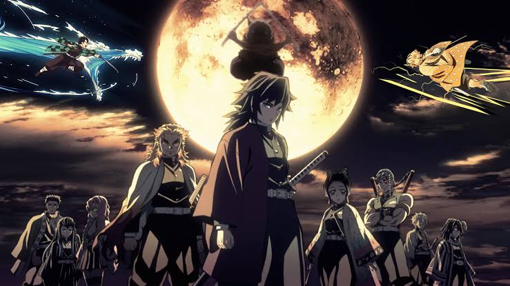

Demon Slayer: Kimetsu no yaiba
Koyoharu Gotouge's masterpiece "Demon slayer: Kimetsu no Yaiba (Blade of the demon crusher)" is one of the most popular shōnen(boy) manga, the series is about Kamado Tanjiro hunting demons with his friend's Zenitsu and Inosuke. The manga series became more popular when its published by Ufotable Studio as an animated series. The manga series is published in Shueisha's shōnen manga magazine Weekly Shōnen Jump in the year February 5, 2016.
The story begins when Tanjiro's father died, the burden of supporting his family has fallen to Tanjiro, one day Tanjiro decided to go down to a local village to sell a charcoal to earn money. The nights fall forced Tanjiro to stay overnight to a strange man's house, the man warns him that there's a demon lurking in the woods. At sunrise, Tanjiro came back to his home, he saw a horrific scene wherein his family was slaughtered by a demon, only his sister survived but his sister became a bloodthirsty demon. Consumed by rage and hatred, Tanjiro swears to avenge his family and protect his sister and to find a cure for her sister, Tanjiro joined a mysterious group called Demon Slayer Corps.
Koyoharu Gotouge the author made all the characters remarkable, all of the characters has different personalities and purposes, although Gotouge is a woman, she made a great shōnen manga. The manga is not all about fighting, killing, it even gives good morals. In the chapter 107 of the manga, Tanjiro said to Muichiro, a hashira(high level of demon slayer), Tanjiro tells him that "Helping other people also ends up being beneficial for you at the end of the day." The series has ended on May 5, 2020 on 205 chapters, after the Mist village arc, the plot became faster, and the ending arrived.
This series is great and recommendable for fantasy and supernatural genre reader, sadly it would be greater if the plot is not rush, the author should have wait for the characters to developed and made them an adult to become a hashira. The author should have make a sequel for this series, overall the series is great and make readers so thrilled because the plot is unpredictable and reader will enjoy reading this series.
